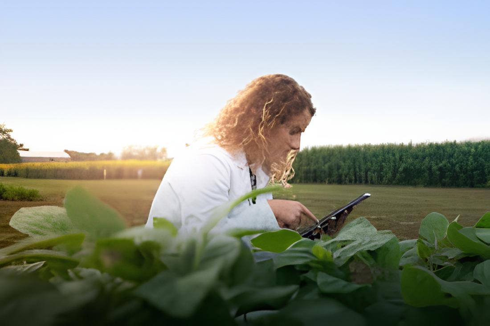
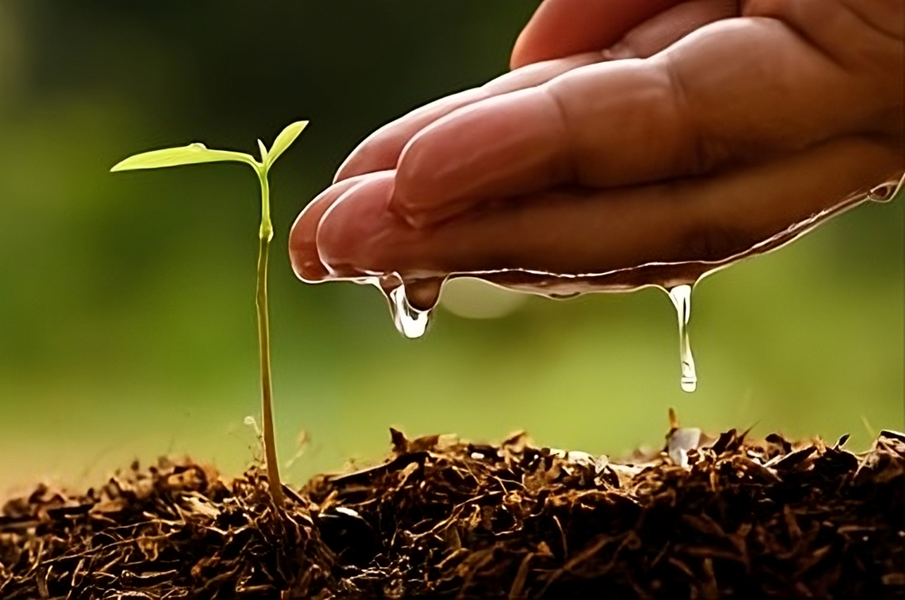

Maria e suas descobertas tecnológicas
Maria sempre trabalhou na pequena propriedade familiar, no interior do Brasil, onde o tempo parecia ter parado há décadas. O cultivo era feito com métodos tradicionais, e a vida no campo seguia um ritmo constante e previsível.
Certa manhã, Maria recebeu a visita de um jovem agrônomo que estava promovendo uma feira de tecnologias agrícolas em uma cidade vizinha. Ele lhe falou sobre os avanços recentes na agropecuária e convidou-a a conhecer as novas ferramentas e técnicas disponíveis.

Curiosa e um pouco cética, Maria decidiu visitar a feira. Lá, ela ficou impressionada com o que viu: drones sobrevoando plantações, sensores de solo medindo a umidade e a qualidade dos nutrientes, e até mesmo sistemas automatizados de irrigação.
O agrônomo explicou a Maria como os drones poderiam mapear as plantações e identificar áreas que precisavam de mais atenção. Ele mostrou como os sensores coletavam dados em tempo real, permitindo ajustes precisos na irrigação e na aplicação de fertilizantes, o que resultava em uma colheita mais saudável e abundante.
Maria também descobriu o conceito de agricultura de precisão, que utiliza essas tecnologias para maximizar a eficiência e a sustentabilidade das práticas agrícolas. Ela aprendeu sobre a importância de analisar os dados para tomar decisões informadas e como isso poderia reduzir custos e melhorar a produtividade.

Inspirada por tudo o que aprendeu, Maria decidiu investir em algumas dessas tecnologias para sua propriedade. Ela começou com sensores de solo e um sistema de irrigação inteligente. A transformação foi gradual, mas a mudança foi visível: as plantações cresceram mais robustas e a colheita foi muito mais abundante.
Ao longo do tempo, Maria se tornou uma defensora das novas tecnologias no campo, compartilhando seu conhecimento com outros agricultores da região. Ela ajudou a criar um grupo local que se reunia regularmente para trocar experiências e aprender sobre inovações na agropecuária.
Hoje, a pequena propriedade de Maria é um exemplo de sucesso na integração de tecnologia no campo. A transformação não apenas melhorou sua produção, mas também inspirou muitos outros a explorar e adotar as maravilhas da tecnologia agrícola. Maria continua a explorar novas tecnologias, sempre em busca de maneiras de otimizar e inovar na agricultura.